A book for the eyes
Goose
Z
An illustrated natural history of the bird, the flock, and the curve we borrowed.
View the plates
The book
A flock, kept on the table
The premier goose book for keeping a flock of geese visually on your coffee table, or anywhere around the house. Here is the V-launch formation, and the gooseneck curve we borrowed.
Goose Z is 8.25 by 11 inches, premium color, case-laminate hardcover. The four spreads below are plates from the book. The contact sheets after them are the polished preview, pages 1 through 158.

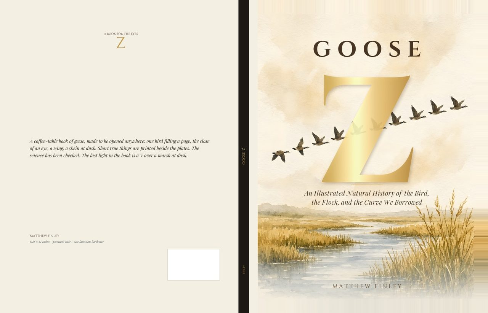
Plates
Four spreads

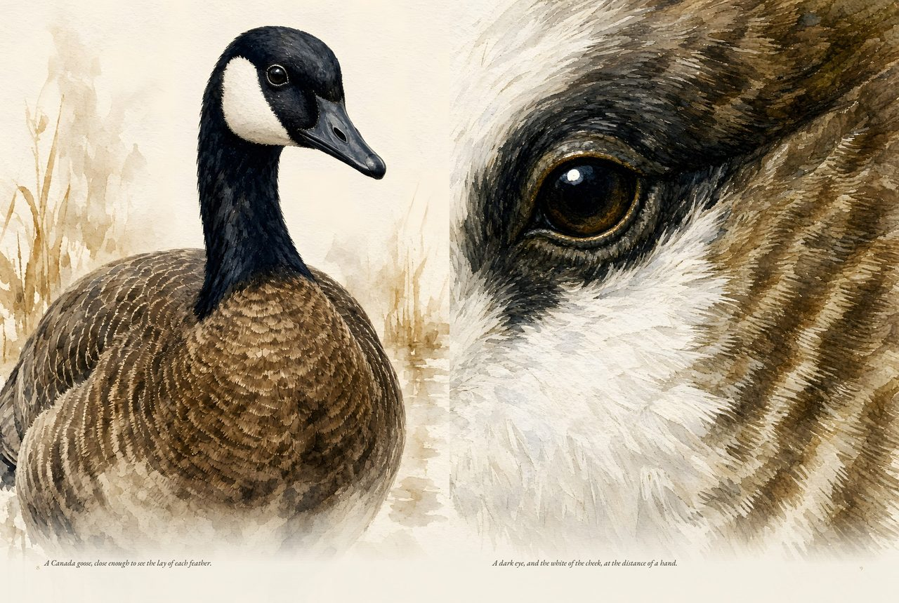

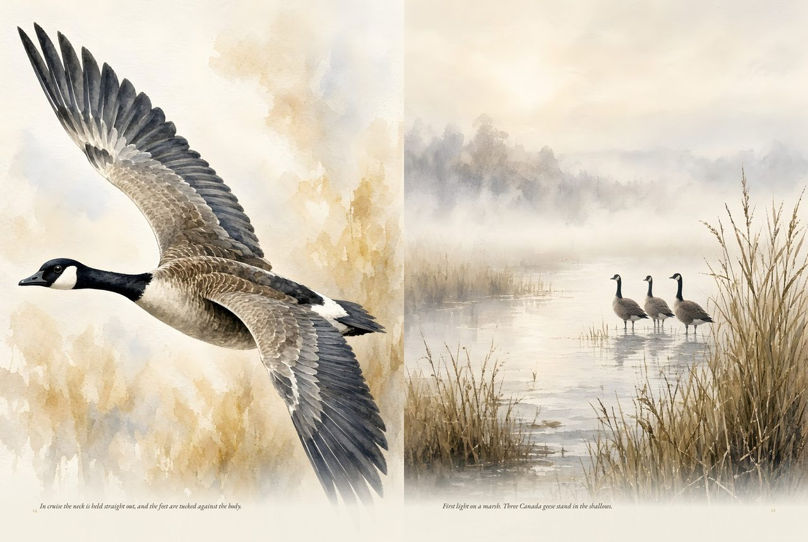

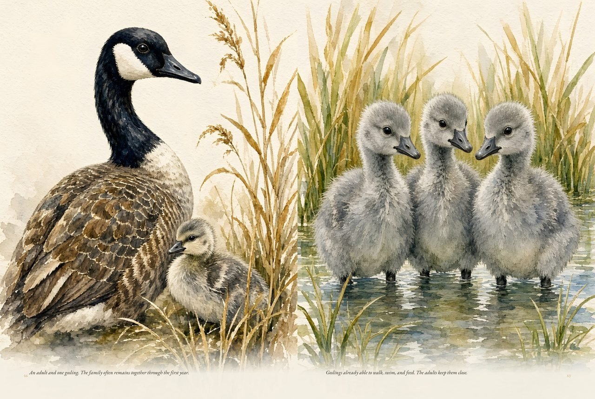

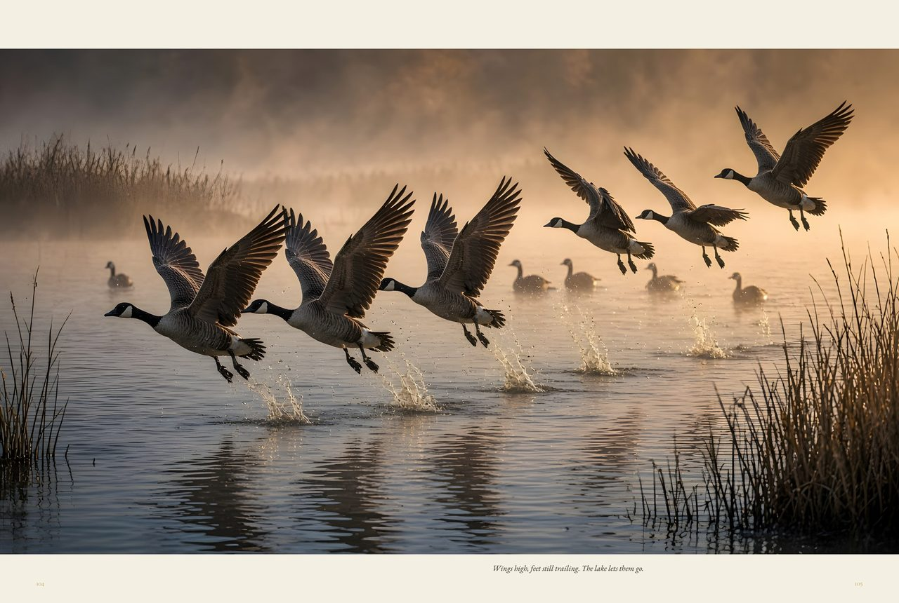
Sheets
The whole book, small
Each sheet is a run of pages from the polished preview. Open one to read it larger.

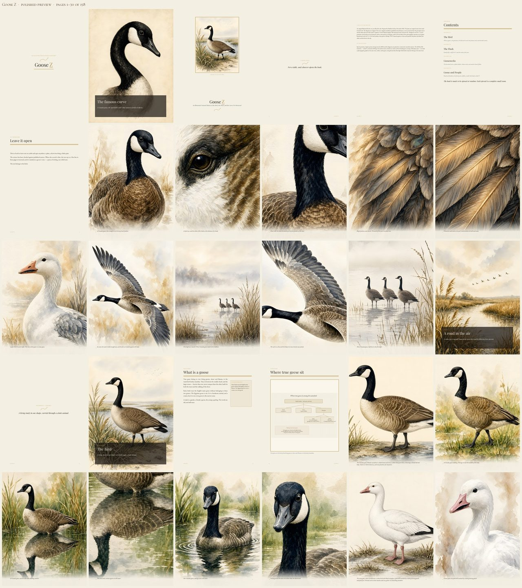

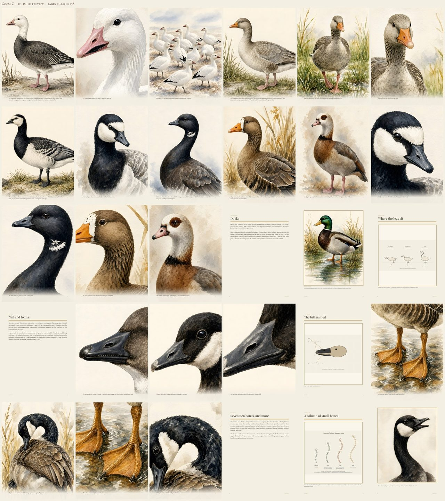

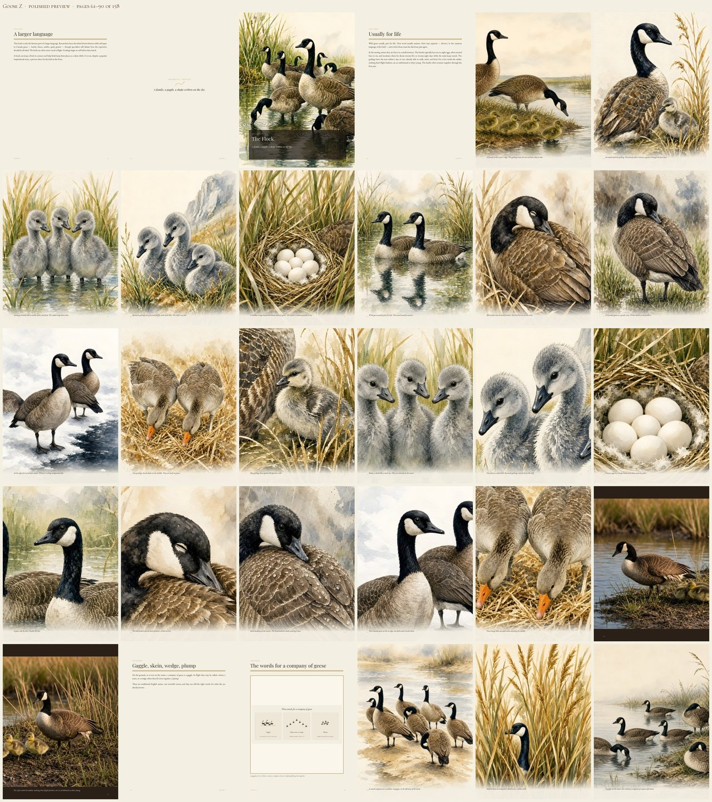

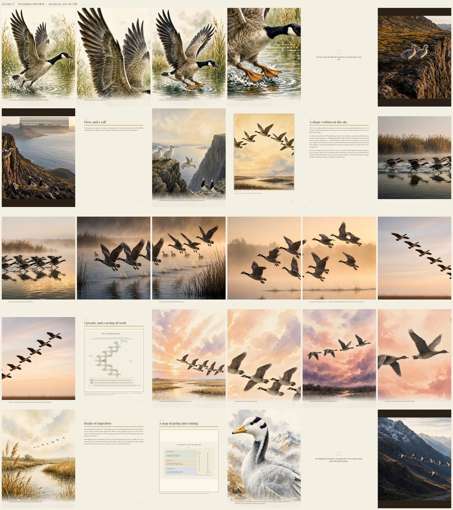

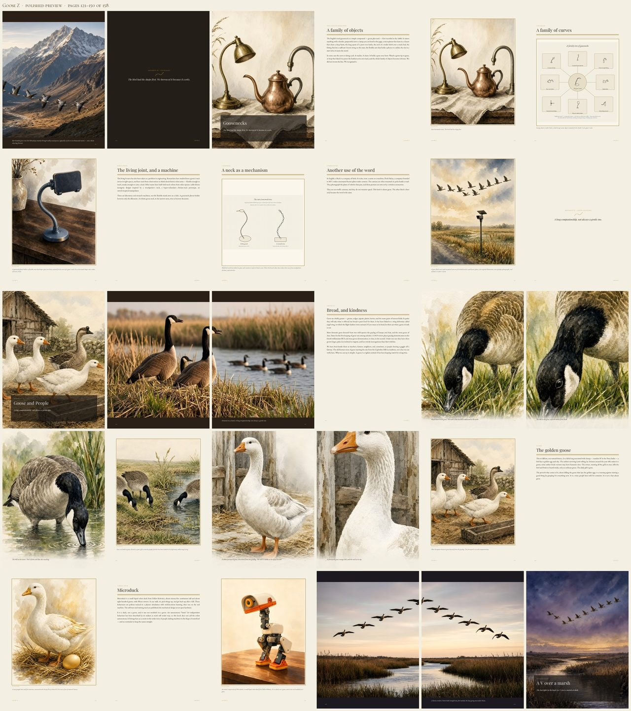

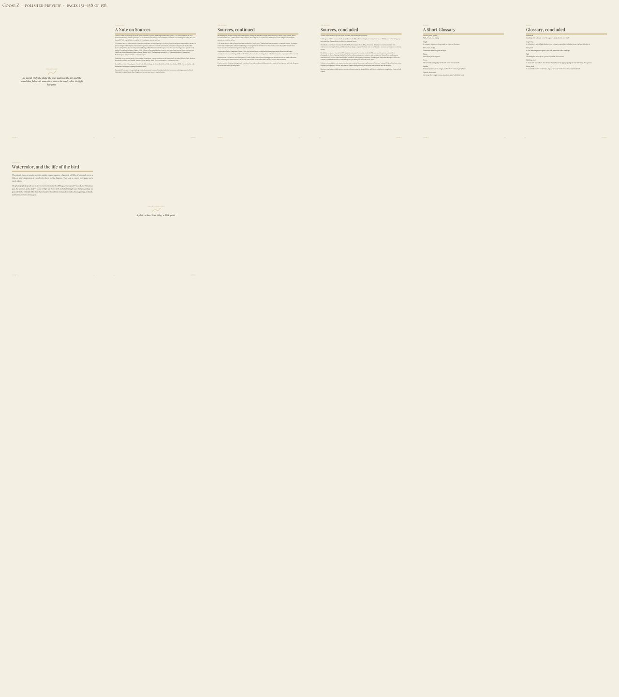
Colophon
The making
- Author
- Matthew Finley
- Format
- 8.25 × 11 inches, premium color, case-laminate hardcover
- Extent
- 158 pages
- This site
- Static gallery, made to be published on GitHub Pages.
The photographs, illustrations, page spreads, contact sheets, and book text are copyright 2026 Matthew Finley. All rights reserved. The code that presents this gallery is available under the MIT License.